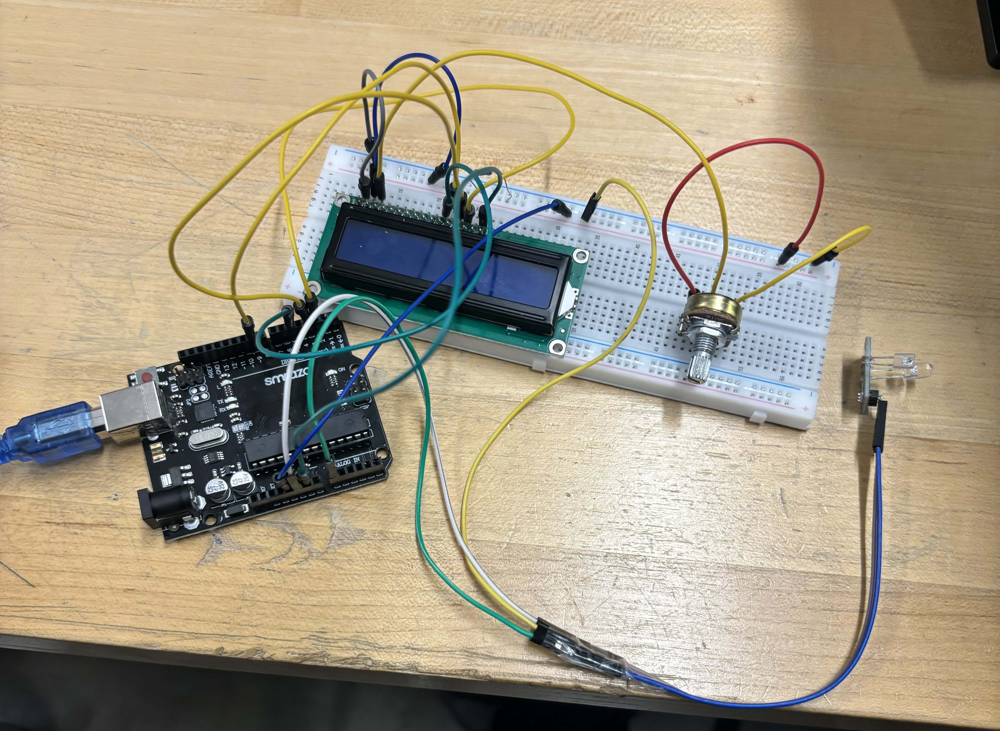

Circuit Diagram
The KY-039 sensor will measure the pulse coming from the fingertip of a user and will display the heart rate on a LCD display in the form of Beats Per Minute


Course: TECH 117 (Computer Engineering Technology, Fall 2025)
Instructor: Ph.D. Ana Rodrigues
Team Members:
This project uses an Arduino Uno, a KY-039 pulse sensor, an LCD display, Red and Green LEDS and a potentiometer, as well to detect and display heart rate in real-time. The system processes the heart's electrical signals via the pulse sensor and displays them on the LCD display for easy monitoring.
The KY-039 sensor will measure the pulse coming from the fingertip of a user and will display the heart rate on a LCD display in the form of Beats Per Minute
| Item | Qty | Unit Price (CAD) | Subtotal (CAD) | Source |
|---|---|---|---|---|
| Arduino Uno Rev3 | 1 | $21.99 | $21.99 | Arduino Store |
| KY-039 Pulse Sensor (Pack of 3) | 1 | $2.99 | $8.99 | Amazon |
| 16x2 LCD Arduino Display | 1 | $10.36 | $10.36 | Amazon |
| LEDs (Red, Yellow, Green) | 3 | $0.05 | $0.15 | DigiKey |
| 220 Ω Resistors | 3 | $0.03 | $0.09 | Adafruit |
| Breadboard | 1 | $5.00 | $5.00 | Amazon |
| Jumper Wires | 1 set | $3.50 | $3.50 | SparkFun |
| USB Cable | 1 | $3.50 | $3.50 | SparkFun |
| Estimated Total | $53.58 | — | ||
The following image shows the assembled prototype on a breadboard.
The following Arduino code detects the pulse from a fingertip, converts it to BPM, and prints it on to the Serial Monitor and the LCD Display
#define samp_siz 4
#define rise_threshold 4
const int rs = 12, en = 11, d4 = 5, d5 = 4, d6 = 3, d7 = 2;
LiquidCrystal lcd(rs, en, d4, d5, d6, d7);
// Pulse Monitor Test Script
int sensorPin = 0;
void setup() {
lcd.begin(16, 2);
Serial.begin(9600);
}
void loop ()
{
float reads[samp_siz], sum;
long int now, ptr;
float last, reader, start;
float first, second, third, before, print_value;
bool rising;
int rise_count;
int n;
long int last_beat;
for (int i = 0; i < samp_siz; i++)
reads[i] = 0;
sum = 0;
ptr = 0;
while(1)
{
// calculate an average of the sensor
// during a 20 ms period (this will eliminate
// the 50 Hz noise caused by electric light
n = 0;
start = millis();
reader = 0.;
do
{
reader += analogRead (sensorPin);
n++;
now = millis();
}
while (now < start + 20);
reader /= n; // we got an average
// Add the newest measurement to an array
// and subtract the oldest measurement from the array
// to maintain a sum of last measurements
sum -= reads[ptr];
sum += reader;
reads[ptr] = reader;
last = sum / samp_siz;
// now last holds the average of the values in the array
// check for a rising curve (= a heart beat)
if (last > before)
{
rise_count++;
if (!rising && rise_count > rise_threshold)
{
// Ok, we have detected a rising curve, which implies a heartbeat.
// Record the time since last beat, keep track of the two previous
// times (first, second, third) to get a weighed average.
// The rising flag prevents us from detecting the same rise more than once.
rising = true;
first = millis() - last_beat;
last_beat = millis();
// Calculate the weighed average of heartbeat rate
// according to the three last beats
print_value = 60000. / (0.4 * first + 0.3 * second + 0.3 * third);
lcd.setCursor(0, 1);
lcd.print(print_value);
Serial.print(print_value);
Serial.print('\n');
third = second;
second = first;
}
}
else
{
// Ok, the curve is falling
rising = false;
rise_count = 0;
}
before = last;
ptr++;
ptr %= samp_siz;
}
}
The system is able to detect a pulse of a fingertip and display the BPM on to the LCD display.
The following external resources and example projects demonstrate related Arduino applications using ultrasonic distance sensors, passive buzzers, and multicolour LEDs: